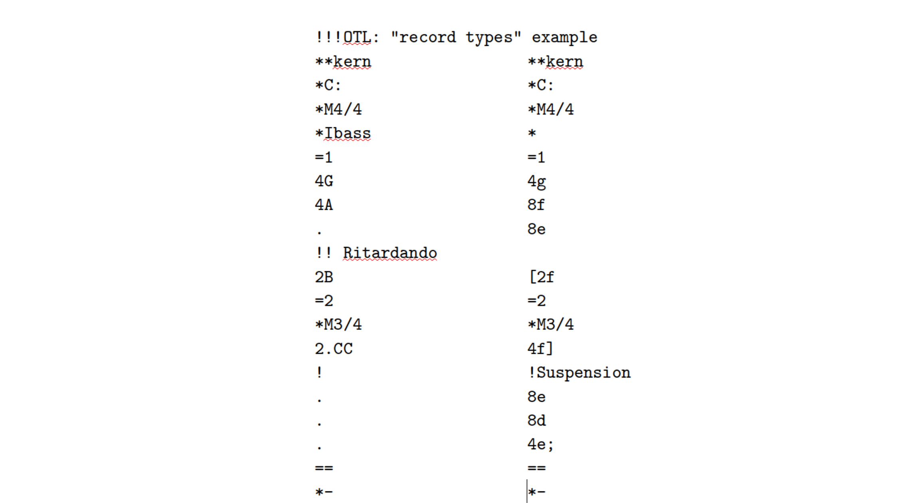
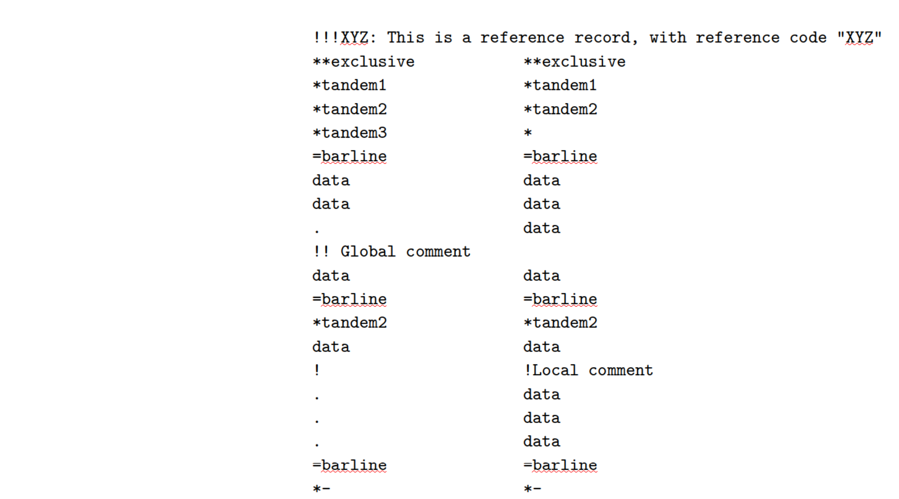
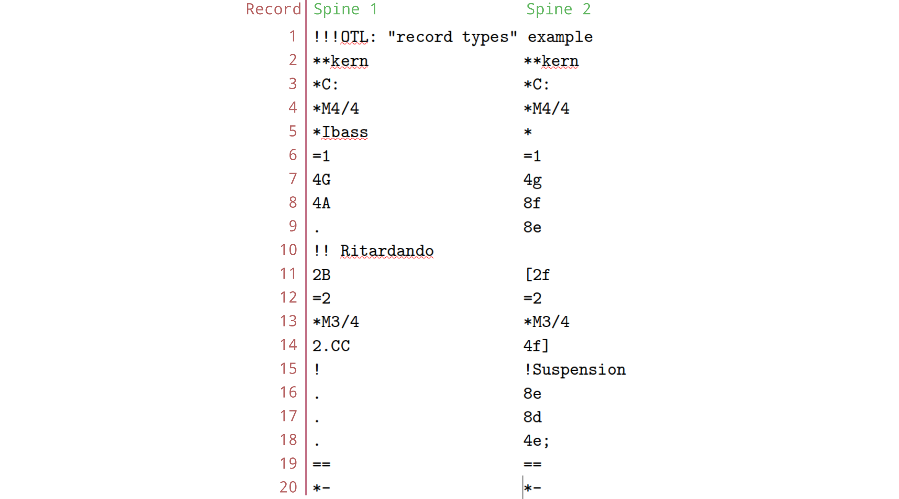
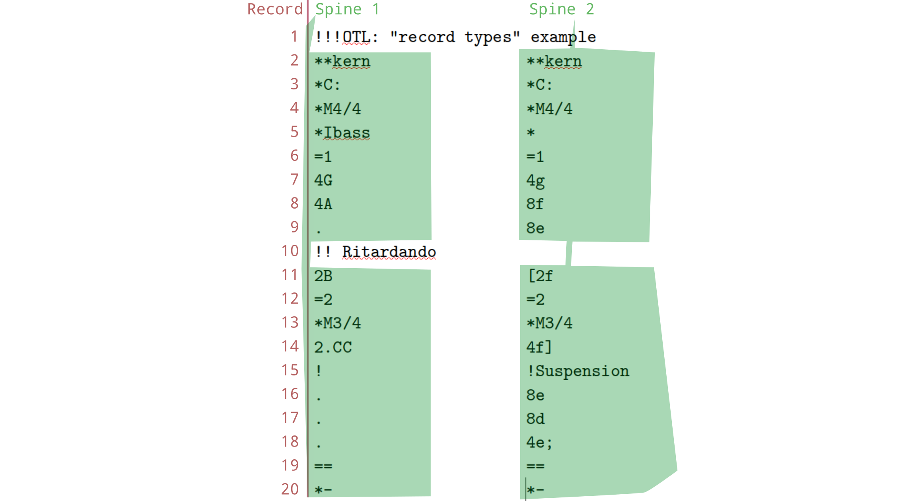
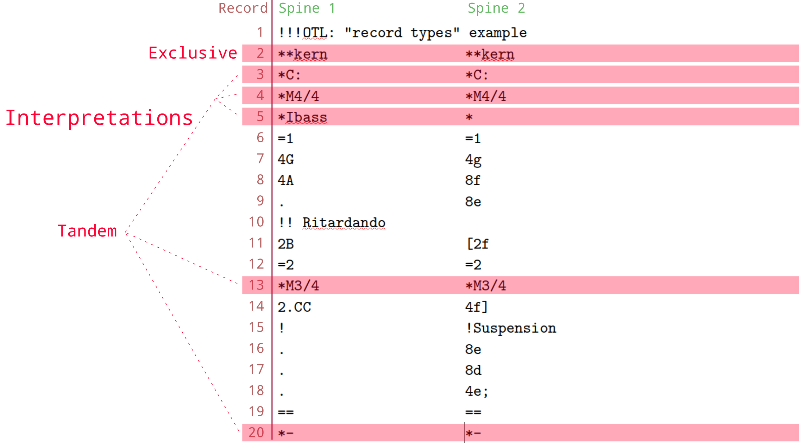
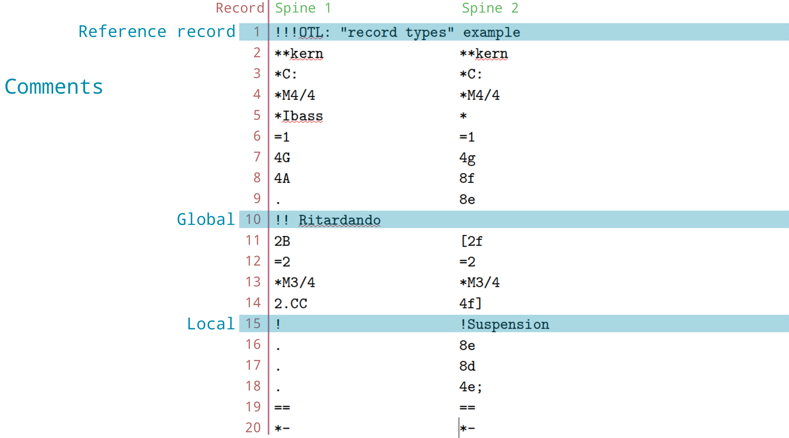

The humdrum syntax
Nathaniel Condit-Schultz
2023-02-02
Source:vignettes/HumdrumSyntax.Rmd
HumdrumSyntax.RmdThe humdrum syntax is a simple, flexible, and powerful way of
encoding musicological data. Humdrum files are simply plain text files—files which simply
contain a simple characters. (This is unlike .pdf
or .docx (MS Word) files, which are much more complex “rich
text” files.) You can open plain-text files in simple text editors like
Notepad (Windows) or TextEdit
(MacOS).
To be a humdrum file, your text-file must have very general layout which is called the humdrum syntax. Such a file can be said “to conform to the humdrum syntax,” “to be valid humdrum,” or most simply “to be a humdrum file.”
In computer programming, you will often encounter words like “characters”, “text”, and “strings” used interchangeably. You’ll also hear combinations like “character-strings” and “text-strings.” These all (generally) refer to the same things: collections of letters, numbers, punctuation, and a control/spacing characters like SPACEBAR (
), TAB (\t), NEWLINE (\n), etc. Technically, humdrum text files are supposed to use the ASCII character set.
Structure vs Content
The humdrum syntax lays out a simple structure for encoding data, but it says nothing about the content. What information is encoded, and how that information is represented is flexible. For all this flexibility, the structure of humdrum data—the humdrum syntax—is always the same, which makes it easy to work with!
To fill content into our humdrum files, we define “interpretations. Interpretations are schemes for how to represent some information as characters. This sounds complicated/scary, but it can be very simple! For instance, if I wanted to encode drum beats in humdrum I could invent a simple scheme for encoding drum beats as:
- Kick drum = “K”
- Snare drum = “S”
- Hi-Hat = “H”
I could treat each newline in my text file as a sixteenth-note tick
(read about humdrum “timebase” below) and start encoding. The only thing
I need to make this conform the humdrum syntax would be to name it: we
call overarching interpretations like this “exclusive
interpretations”, which are prefixed with **. We could
call it **drums and we’d be ready to create humdrum
data!
Syntax
The humdrum syntax is, at first glance, nothing but a simple, tab-delineated spread sheet. (“tab-delineated” just means that the columns of the spreadsheet are separated by TABs.) This is the basic idea, but there are a few extra features to learn!
Let’s take a look at a basic humdrum file:

This file can be broken down into different types of information like this:

This file has two columns of data, separated by tabs. However, we have special terminology that we use: The “columns” in a humdrum file are called spines. Each line, or row, in the file is called a record.

There are twenty records and two spines in this file.
Each character-string, located at each spine/record position, is
called a token. Examples of tokens in this file include
*M4/4, 4A, =1, and
!Suspension.
Global vs Local
You’ll notice that two records in this file (1 and
10) don’t seem to have two columns. Indeed, these are
called “global” records—they don’t belong to a particular
column, but to the whole row/file. This image illustrates that the two
spines in this file don’t include records 1 and
10:

Or with the real data again:
Time
There is one fundamental assumption regarding how the humdrum syntax encodes information: as we travel downward through a file (from top to bottom) we are encoding information in the order it occurs in time. This is true of data records—interpretation and comment records are all associated with the moment in time of the first data record that occurs below them. Information that appears in the same record (within one spine, or in different spines) is assumed to happen at the same time.
Record Types
The humdrum syntax recognizes four broad types of records, with five sub-types:
- Interpretations
- Exclusive (
**) - Tandem (
*)
- Exclusive (
- Comments
- Reference (
!!!) - Global (
!!) - Local (
!)
- Reference (
- Barlines (
=) - Data
We know what type of record we’re dealing with by looking at the first character in each token. All tokens in a single record must be of the same type—you can’t have an interpretation token and a comment token on the same line. As a result, we can refer to the type of a token, or the type of a whole record, because all the tokens within a record are always the same type.
Interpretations
If a token starts with *, it is an interpretation token.
Two stars ** indicates an exclusive
interpretation. Every spine must start with an exclusive interpretation,
and can only have one. The exclusive interpretation for a spine tells us
the type of information is encoded in that spine, for the whole spine.
For instance, our **drums interpretation that we invented
above is an exclusive interpretation.
In the examples we’re using here, the exclusive interpretation in
both spines is **kern, is the most widely used humdrum
interpretation, used to encode music notation. Note that a humdrum file
can have different exclusive interpretations in each spine—they don’t
have to be the same, as they are in this example. To read about various
humdrum interpretations that have been defined, check out humdrum.org.

If a token starts with only one *, it is called a
tandem interpretation. Tandem interpretations tell us
more specific, localized information about how to interpret data. There
can be different, overlapping tandem interpretations within a spine. In
our example,
*C:, *Ibass, *M4/4, and
*M3/4, are all tandem interpretations. *C: is
used in **kern to indicate the key of C major.
*Ibass indicates what instrument is associated with that
spine (bass voice). *M4/4 and *M3/4 indicate
4/4 and 3/4 meter respectively. This last case brings up something
important about tandem interpretations: a tandem interpretation is
applied to all subsequent data points, unless it is cancelled or
replaced by another tandem interpretation of the same type. Thus, this
humdrum file indicates 4/4 time starting at record 5, but switches to
3/4 time at record 13. However, the *M4/4 in record 4
doesn’t replace the *C: in record 3, because they are
different types of tandem interpretations.
One more very special token is the *- token. This token
indicates where a spine ends. If the *- are
missing at the end—one for every spine—it is an invalid humdrum
file!
Comments
If a token begins with !, it is a
comment token. Comments are used to freely include
comments in the data. There are both global comments
(!!) which are not associated with a spine—they apply to
the whole file at the point they appear—and local comments
(!) which are specific to a particular spine. In our
example, !! Ritardando is a global comment, while
!Suspension is a local comment, which is specific to the
second spine.

Reference Records
There is one final type of comment: reference
records. Reference records are global comments that are placed
at the beginning or end of file. Reference records encode global
metadata about an entire file: things like who composed the piece or
what the title of the piece is. Reference records have specific
“reference codes,” usually three digits, which come after the
!!!, and are followed by a colon, then whatever the content
of the record is. For instance, the code !!!OTL: refers to
the original title of the piece. Learn about various standard humdrum
reference records here.